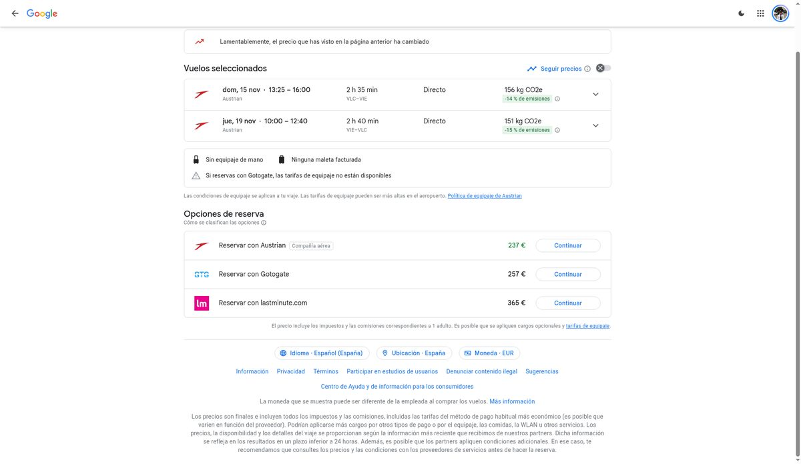
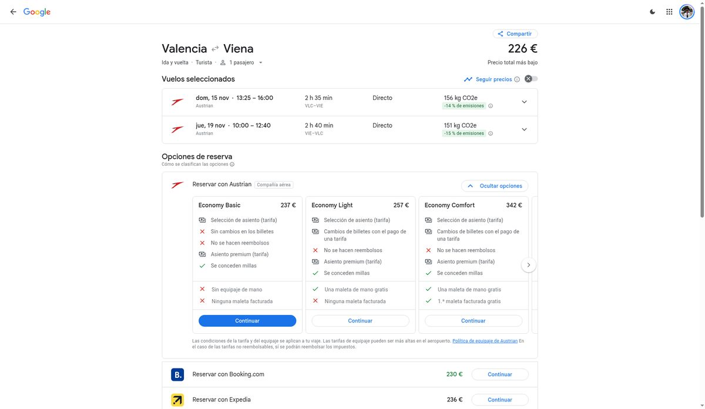
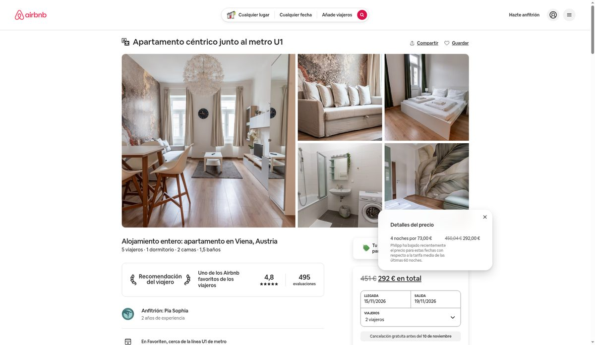

Leyenda: GRATIS = no cuesta nada · (est.) = dato estimado o no confirmado en fuente oficial · ✔ = comprobado en web oficial o nota oficial el 2 nov 2026. Los tiempos de trayecto son estimados a partir de los horarios de Wiener Linien e incluyen ~3 min a pie hasta el metro y ~3 min de espera. Antes de cada trayecto, mirad la app WienMobil o Google Maps.
Ojo, que oscurece pronto: el 15 de noviembre amanece hacia las 7:00 y se pone el sol hacia las 16:20 (est.). Dejad lo de exterior para la mañana y los mercados de Navidad (que ganan muchísimo con luces) para la tarde.
Vuelos y alojamiento elegidos
Nada reservado. Es la opción que hemos elegido, pero todavía no se ha comprado ni reservado nada. Precios consultados el 2 nov 2026; pueden cambiar.
✈️ Vuelos · Austrian Airlines, directos Valencia ⇄ Viena (2 adultos)
- Ida: OS 432 · domingo 15 nov 2026 · Valencia (VLC) 13:25 → Viena (VIE) 16:00 · 2 h 35 min, directo
- Vuelta: jueves 19 nov 2026 · Viena (VIE) 10:00 → Valencia (VLC) 12:40 · 2 h 40 min, directo Austrian
| Tarifa (ida y vuelta, por persona) | Qué incluye | Precio |
|---|---|---|
| Economy Basic (la elegida) | Solo bulto personal bajo el asiento, 40×30×15 cm. Sin cambios ni reembolso. | 237 € |
| Economy Light | Añade maleta de cabina de 8 kg, 55×40×23 cm | 257 € |
| Total los dos en Basic | 474 € |
Consultado el 2 nov; puede cambiar.
Ver en Google Flights Web de Austrian

🏠 Apartamento · Airbnb, Favoriten (junto al U1)
- Alojamiento entero, unos 55 m²: 1 dormitorio, 2 camas, 1,5 baños y cocina.
- Valoración 4,8 con 495 reseñas (fuente: Airbnb).
- Metro más cercano: U1 Troststraße, a unos 50 m · ~17 min hasta Stephansplatz.
- Entrada desde las 15:00 con caja de llaves (self check-in) · salida antes de las 11:00.
- Precio: ~292 € las 4 noches (15–19 nov) para 2 = 4 noches × 73 €, antes de limpieza, comisión de Airbnb e impuestos (se ven al reservar; tasa turística sin verificar). Consultado el 2 nov; puede cambiar.
- Cancelación: Cancelación gratuita (reembolso del 100 %) hasta el 10 nov a las 15:00 (hora de Viena). Hasta el 15 nov a las 15:00, reembolso del 50 % de todas las noches salvo la primera (la tarifa de servicio no se devuelve). Después, sin reembolso.


Fotos del anuncio de Airbnb.

💶 Resumen
Total estimado para los dos: ~766 €
Vuelos Austrian Basic 474 € + apartamento 292 €. Sin gastos de limpieza ni comisiones de Airbnb y sin tasa turística si no está incluida (sin verificar).
Nada reservado.
Plan día a día
Domingo 15 · Llegada tranquila
Lunes 16 · La Viena imperial del centro
Martes 17 · Schönbrunn, Naschmarkt y la Ópera
Miércoles 18 · Klimt, Hundertwasser y la noria del Prater
Jueves 19 · Vuelta a casa
Cómo llegar desde casa (U1 Troststraße)
La estación más cercana al apartamento es Troststraße (U1), no Reumannplatz ni Keplerplatz. Reumannplatz queda a unos 800 m al norte. Hacia el centro, la U1 va en dirección Leopoldau; hacia casa, en dirección Oberlaa. Pasa cada 2–5 min durante el día ✔.
| Destino | Subís en | Línea y dirección | Transbordo | Bajáis en | Paradas | A pie | Total |
|---|---|---|---|---|---|---|---|
| Stephansdom | Troststraße | U1 → Leopoldau | — | Stephansplatz | 6 | 3 + 1 | ~17 min |
| Hofburg / Heldenplatz | Troststraße | U1 → Leopoldau | Stephansplatz: U3 → Ottakring | Herrengasse | 6 + 1 | 3 + 4–7 | ~25 min |
| Staatsoper / Karlsplatz | Troststraße | U1 → Leopoldau | — | Karlsplatz (salida Oper) | 5 | 3 + 2 | ~15 min |
| Naschmarkt | Troststraße | U1 → Leopoldau | Karlsplatz: U4 → Hütteldorf | Kettenbrückengasse | 5 + 1 | 3 + 1 | ~20 min |
| Belvedere Superior | Troststraße | U1 → Leopoldau | Hauptbahnhof: tranvía D → Nußdorf | Schloss Belvedere | 3 + 2–3 | 3 + 3 | ~20 min |
| Schönbrunn | Troststraße | U1 → Leopoldau | Karlsplatz: U4 → Hütteldorf | Schönbrunn | 5 + 6 | 3 + 8 | ~35 min |
| MQ / KHM | Troststraße | U1 → Leopoldau | Karlsplatz: U2 → Seestadt | Museumsquartier | 5 + 1 | 3 + 3 | ~22 min |
| Prater / Riesenrad | Troststraße | U1 → Leopoldau | — | Praterstern | 9 | 3 + 7 | ~25 min |
| Hundertwasserhaus | Troststraße | U1 → Leopoldau | Schwedenplatz: tranvía 1 → Prater Hauptallee | Hetzgasse | 7 + 3 | 3 + 2 | ~28 min |
| Rathaus / Parlament | Troststraße | U1 → Leopoldau | Karlsplatz: U2 → Seestadt | Rathaus (Parlament: Volkstheater) | 5 + 3 (5 + 2) | 3 + 3 | ~25 min |
| Grinzing / Kahlenberg | Troststraße | U1 → Leopoldau | Schwedenplatz: U4 → Heiligenstadt, luego bus 38A → Kahlenberg | Grinzing / Kahlenberg | 7 + 4 + bus | 3 + 2 | ~45 / ~60 min |
| Aeropuerto VIE | Troststraße | U1 → Leopoldau | Hauptbahnhof: Railjet o REX7 → Flughafen Wien | Flughafen Wien | 3 + tren sin paradas | 3 + 5 | ~40–50 min |
Todos los totales son estimados. Se calculan con los minutos entre estaciones de los horarios de Wiener Linien (por ejemplo, de Reumannplatz a Stephansplatz son 8 min) y se les suman los tramos a pie y la espera. Los tramos de tranvía y bus son aproximados.
Obras en el S-Bahn: el tramo central del S-Bahn, entre Praterstern y Hauptbahnhof, está cerrado desde el 7 sep 2026 hasta finales de 2027 ✔. Os afecta poco: el Railjet y el REX7 siguen llegando a Hauptbahnhof, el S7 se queda en St. Marx y el CAT funciona con autobús hasta Wien Mitte.
Billetes 2026 y aeropuerto
Wiener Linien (zona central)
- Billete sencillo: 3,20 € (3,00 € en la app). Vale 80 min en un solo sentido ✔.
- 24 horas: 10,20 € (9,70 € en la app) ✔.
- Los abonos de 48 h y 72 h ya no existen desde el 1 ene 2026 ✔.
- 7 días: 28,90 € (en la app 25,20 €, nominal). Puede empezar cualquier día ✔. Es lo más rentable para vosotros: uno por persona, desde el domingo hasta el jueves.
- Viajar sin billete se multa con 135 € ✔.
Aeropuerto ↔ ciudad
- Recomendado: ÖBB Railjet o REX7 entre VIE y Wien Hbf, unos 15–20 min sin paradas, cada 30 min. Cuesta 5,50 € (2,30 € del tramo exterior más 3,20 € de la zona central, que ya incluye la U1). Con el abono de 7 días solo pagáis el suplemento de 2,30 € ✔.
- CAT: ahora es un autobús hasta Wien Mitte. 21 min, 14,90 € ida y 24,90 € ida y vuelta ✔. Os sale más caro y peor situado.
- Vienna Airport Lines (bus): 11 € ✔.
- S7: con las obras solo llega hasta St. Marx, así que no os conviene.
Lo que os costaría el transporte: abono de 7 días en la app (25,20 €) más el suplemento de 2,30 € en cada trayecto al aeropuerto = 29,80 € por persona, 59,60 € los dos (est.). Si vais casi todo a pie, el mínimo sería ir y volver del aeropuerto con billetes sencillos: 5,50 € × 2 trayectos × 2 personas = 22 €.
Horarios y precios (noviembre 2026)
| Sitio | Horario | Precio por adulto | |
|---|---|---|---|
| Stephansdom | Visita turística: lun–sáb 9–11:30 y 13–16:30; dom 13–16:30. Torres 9–19. | Zona de oración GRATIS. Visita 8 €, Torre Sur 8 €, Torre Norte (ascensor) 8 €, catacumbas 8 €, entrada todo incluido 29 €. | ✔ |
| Schönbrunn | Palacio 8:30–17:00 (última entrada 45 min antes). Parque 6:30–17:30. | Parque GRATIS. Palace Ticket ~42 € (est.). Imperial Lights (luces nocturnas) desde 24 €, a partir de las 16:30. | ✔ horarios |
| Belvedere Superior | A diario 9–18 | 23 € con franja horaria. Jardines GRATIS. | ✔ |
| Kunsthistorisches Museum | A diario 10–18; jueves hasta 21 | 22 € online / 24 € en taquilla. Franja horaria. | ✔ |
| Hofburg: Sisi Museum y apartamentos imperiales | La exposición nueva abre el 19 nov a las 11:00, el día que os vais. | Hasta el 18 nov, entrada reducida de 15 € (salas parciales). Con guía 33 €. Sisi Pass 60 €. | ✔ |
| Staatsoper | Visitas guiadas según calendario. Entradas de pie: solo el día de la función, desde las 10:00. | Visita 18 €, backstage 48 €. De pie: muy barato (desde 4 € con BT-Card); el precio normal ronda 13–18 € (est.). | ✔ visita |
| Parlamento | Visitas guiadas con reserva | GRATIS | ✔ |
| Riesenrad | ~10:00–21:45 | ~14,50 € | (est.) |
| Hundertwasserhaus / KunstHausWien | Fachada siempre visible. Museo 10–18. | Fachada GRATIS. Museo 16 €. | (est.) |
Alternativas gratis que valen mucho la pena
- Interior de la Stephansdom (zona de oración), Karlskirche por fuera, Secession por fuera.
- Jardines de Schönbrunn y la Gloriette, jardines del Belvedere, Burggarten, Volksgarten y Stadtpark (con la estatua dorada de Strauss).
- Heldenplatz y el patio de la Hofburg, y el pasaje de Michaelerplatz.
- Visita guiada del Parlamento.
- Todos los mercados navideños (pasear) y las luces de Navidad de Graben y Kohlmarkt.
- Paseo por el Prater; el Danubio en Schwedenplatz y el canal.
Cafés vieneses
Café Central está CERRADO por reforma desde el 16 mar 2026 ✔. Dicen que reabrirá "en invierno de 2026", pero no hay fecha. Mientras tanto, el mismo café funciona en DECENTRAL (Freyung 3), abierto a diario de 7:30 a 22:00 ✔.
- Café Sperl (Gumpendorfer Str. 11, cerca del Naschmarkt): el más auténtico. Lun–sáb 7–22, dom 10–20. Melange ~4,90 € (est.).
- Café Hawelka (Dorotheergasse 6): bohemio y sin reformas. Lun–jue 9–24, vie y sáb 9–1, dom 9–22 ✔. Pedid los Buchteln (bollitos rellenos).
- Café Prückel (Stubenring 24): estilo años 50, con sitio de sobra. A diario 8:30–22. Melange ~4,90 € (est.).
- Demel o Sacher: para probar la Sachertorte. Son caros y suele haber cola. Más barato: comprar una porción para llevar.
Truco: en los cafés clásicos te sirven un vaso de agua gratis con el café, y podéis quedaros el tiempo que queráis.
Comer barato y típico
- Würstelstand (puesto de salchichas): Käsekrainer, una salchicha rellena de queso, por ~5–6 € (est.). Famoso el Bitzinger, junto a la Albertina y la Ópera.
- Mittagsmenü: de lunes a viernes, muchos restaurantes tienen menú de mediodía por ~10–14 € (est.).
- Naschmarkt: falafel, kebab y bocadillos baratos.
- Zum Schwarzen Kameel: sus montaditos (Brötchen) son baratos y en el centro.
- Favoriten, vuestro barrio: Favoritenstraße está llena de kebabs y panaderías baratas.
- Tichy (Reumannplatz): heladería mítica de la ciudad. Su especialidad son las Eismarillenknödel (bolas de helado con albaricoque). Puede cerrar en invierno (est.).
Supermercados cerca del apartamento
Los horarios son de directorios y conviene comprobarlos. Todos cierran los domingos.
- SPAR, Troststraße 11, al lado de casa.
- BILLA, Troststraße 63: lun–vie 7:15–19:30.
- Lidl, Favoritenstraße 92: lun–vie 7:40–20, sáb 7:40–18.
- Hofer (el Aldi austriaco), Favoritenstraße 126: lun–vie 7:15–20, sáb 7:15–18.
- BILLA, Favoritenstraße 99, y SPAR, Viktor-Adler-Platz 6.
- Domingo: las tiendas de la estación Hauptbahnhof suelen abrir.
Ideas para cocinar fácil: Leberkäse (fiambre caliente austriaco), salchichas, Kaiserschmarrn (tortita dulce desmigada) de preparado, Almdudler (refresco de hierbas), Manner (barquillos), y pan de panadería tipo Ströck o Anker. Las botellas con depósito tienen Pfand (fianza): se devuelven en la máquina del súper.
Tiempo y qué ropa llevar
A mediados de noviembre: máximas de ~7–9 °C y mínimas de ~3–4 °C. Unos 7–11 días de lluvia al mes, a menudo gris y con viento (medias climáticas, est.). Mirad la previsión unos días antes.
- Abrigo o plumífero fino que se pueda comprimir (llevadlo puesto en el avión para no ocupar mochila), gorro, guantes y bufanda.
- Calzado cómodo e impermeable: vais a andar 10–15 km al día.
- Paraguas plegable y capas de ropa: dentro de museos, cafés y metro hace calor.
- Mochila de 40×30×15 cm: ropa justa, y lavar a mano en el piso si hace falta.
Checklist práctico
- DNI en vigor (no hace falta visado ni pasaporte, es la UE).
- Tarjeta Sanitaria Europea (TSE) de los dos, pedidla en la Seguridad Social si no la tenéis.
- Seguro de viaje (opcional, recomendable).
- Tarjeta activada para pagar fuera, sin comisión en euros. En Viena se paga con tarjeta casi en todas partes, pero llevad algo de efectivo para los puestos.
- Cajeros: usad los de bancos (Bank Austria, Erste…) y evitad los de Euronet, que cobran comisión. Si os ofrecen "conversión de moneda", decid que no.
- Roaming UE incluido: llamáis y navegáis como en España.
- Enchufes tipo F, los mismos que en España. No necesitáis adaptador.
- Propina: redondear o dejar un 5–10 %, diciéndolo al pagar ("Zwanzig, bitte").
- Los domingos cierran casi todas las tiendas y súper. Comprad el sábado o en la estación.
- Tasa turística (Ortstaxe): 5 % del alojamiento desde el 1 jul 2026. Comprobad si Airbnb ya la incluye.
- Apps: WienMobil (billetes y rutas), ÖBB (tren del aeropuerto) y Google Maps sin conexión.
- Comprad el abono digital antes de subir al metro. Hay revisores.
- Reservad online con franja horaria Belvedere, KHM y el Parlamento (gratis) si los vais a hacer.
Presupuesto
| Concepto | Importe |
|---|---|
| Vuelos Austrian Economy Basic (237 € × 2) | 474 € |
| Apartamento Airbnb, 4 noches (sin limpieza ni comisión de Airbnb) | 292 € |
| Subtotal | ~766 € |
| Ortstaxe 5 % (si no va incluida) | ~14,60 € (est.) |
| Transporte: abono 7 días en la app + aeropuerto (×2) | ~59,60 € (est.) |
| Ejemplo de extras para dos: Belvedere 46 €, Riesenrad ~29 €, Torre Sur 16 € | ~91 € |
Siendo sinceros: de los 800 € quedan unos 34 € después de vuelos y piso, y el transporte solo ya se lleva ~60 €. Con 800 € no da para entradas: la mayor parte del plan está pensada para que funcione GRATIS. Si podéis estirar a unos ~950–1.000 € en total, podríais añadir comida fuera, cafés y uno o dos museos.
Dudas abiertas y suposiciones
- No hay nada reservado: ni vuelos, ni apartamento, ni entradas. Los precios se miraron el 2 nov 2026 y pueden cambiar.
- Equipaje en Economy Basic: solo un artículo personal de 40×30×15 cm bajo el asiento. Medid las mochilas.
- Airbnb muestra la ubicación aproximada, así que los minutos a pie hasta Troststraße son estimados.
- Los tiempos de trayecto son estimados y los precios marcados como (est.) no están confirmados en la web oficial.
- El Museo de Sisí cambia de exposición y de precio el 19 nov. Esos días solo abre una parte.
- Café Central: reapertura sin fecha concreta.
- Wiener Linien ha anunciado cambios de tarifas para el 1 ene 2027 (no os afecta).